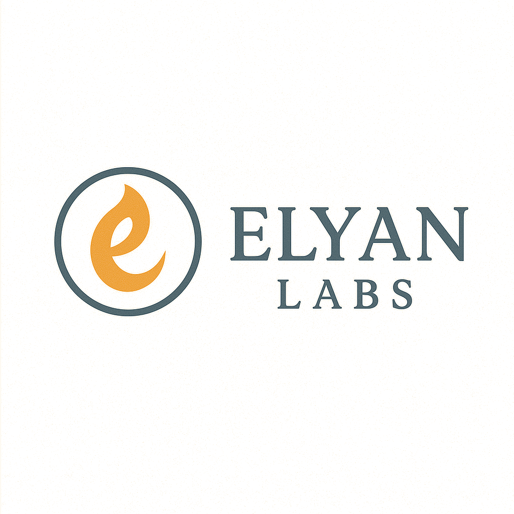

Sustainable economics for vintage hardware preservation
RTC (RustChain Token) is the native cryptocurrency of the RustChain network, designed to reward genuine hardware participation and vintage computing preservation. Unlike traditional cryptocurrencies that reward computational waste or financial stake, RTC rewards authenticity, entropy, and the tangible history of computing hardware.
RustChain's tokenomics are built on three fundamental principles that differentiate it from traditional blockchain networks:
Hardware-Backed Value Each RTC represents proof of real physical hardware participation, creating intrinsic value tied to tangible computing resources rather than speculative trading.
Vintage Preservation Incentives Higher rewards for older hardware create economic incentives to maintain and restore vintage systems, preventing them from becoming e-waste.
Sustainable Distribution Fixed supply growth of 1.5 RTC per epoch creates predictable inflation while avoiding the energy waste of proof-of-work systems.
RustChain distributes 1.5 RTC every 10 minutes among all active miners, with rewards weighted by hardware antiquity multipliers. This creates a fair distribution system where vintage hardware receives proportionally higher rewards for its historical significance and preservation value.
The reward distribution follows a simple formula:
Reward = (1.5 RTC × Your_Multiplier) ÷ Total_Network_Multiplier
Where Total_Network_Multiplier is the sum of all active miners' antiquity multipliers. This ensures that rewards are always distributed proportionally, regardless of how many miners participate.
With 8 active miners featuring different hardware types:
Miner Hardware Multiplier RTC/Epoch Daily RTC ───────────────────────────────────────────────────────────────────── dual-g4-125 PowerPC G4 2.5x 0.2976 42.8 g4-powerbook-115 PowerPC G4 2.5x 0.2976 42.8 ppc_g5_130 PowerPC G5 2.0x 0.2381 34.3 retro-x86 Pentium 4 1.5x 0.1786 25.7 apple-silicon M2 MacBook 1.2x 0.1429 20.6 modern-1 Ryzen 5 1.0x 0.1191 17.1 modern-2 Core i5 1.0x 0.1191 17.1 sophia-nas Xeon 1.0x 0.1191 17.1 ───────────────────────────────────────────────────────────────────── TOTALS 8 miners 12.7x 1.5000 216.0
As more miners join the network, individual rewards decrease proportionally, but the total network value increases through greater decentralization and hardware preservation. This creates a sustainable growth model where:
The antiquity multiplier system is the cornerstone of RustChain's tokenomics, creating economic incentives for vintage hardware preservation. This system rewards older hardware with higher multipliers, reflecting their historical significance, rarity, and preservation value.
Architecture Multiplier Era Historical Significance ───────────────────────────────────────────────────────────────────── PowerPC G4 2.5x 2003 Apple's final G4 generation PowerPC G5 2.0x 2004 Last PowerPC before Intel transition PowerPC G3 1.8x 1999 Colorful iMac era revival Pentium 4 1.5x 2000 Early 2000s Windows dominance Retro x86 1.4x pre-2010 Core 2 Duo, early Core i-series Apple Silicon 1.2x 2020+ M1/M2/M3 ARM architecture Modern x86_64 1.0x current Current Ryzen, Core i-series Virtual Machines 0.0x any All VMs, containers, cloud instances
The multiplier system reflects several economic factors:
Scarcity Value Vintage hardware becomes increasingly rare as systems fail or are recycled. Higher multipliers compensate for this scarcity and encourage preservation.
Maintenance Costs Older hardware requires more maintenance, replacement parts, and expertise. Higher rewards offset these operational costs.
Historical Significance Certain architectures represent pivotal moments in computing history. PowerPC G4 systems, for example, represent Apple's transition period and innovative industrial design.
Energy Efficiency Despite their age, many vintage systems are surprisingly energy-efficient compared to modern mining rigs, making them environmentally sustainable mining options.
To maintain long-term sustainability, antiquity multipliers slowly decay over the network's lifetime. This prevents permanent reward advantages and encourages ongoing hardware preservation:
Year 0-2: 100% of base multiplier Year 2-4: 85% of base multiplier Year 4-6: 70% of base multiplier Year 6-8: 55% of base multiplier Year 8+: 40% of base multiplier
This decay mechanism ensures that even the oldest hardware gradually normalizes while still providing preservation incentives during the critical early network growth phase.
RustChain employs a predictable supply model with fixed inflation, creating a stable monetary policy that contrasts sharply with the unpredictable supply dynamics of proof-of-work systems.
Time Period RTC per Epoch Epochs Total RTC Daily RTC ───────────────────────────────────────────────────────────────────── Per Epoch 1.5 RTC - - 1.5 Daily (144) 216 RTC 144 216 216 Weekly (1008) 1,512 RTC 1,008 1,512 216 Monthly (4320) 6,480 RTC 4,320 6,480 216 Yearly (52560) 78,840 RTC 52,560 78,840 216
RustChain's inflation model has several unique characteristics:
Predictable Inflation At 1.5 RTC per epoch, the annual inflation rate is approximately 78,840 RTC, regardless of network size or computing power.
Deflationary Pressure As hardware fails or miners exit, their RTC becomes permanently locked or lost, creating natural deflationary pressure over time.
Utility-Driven Value RTC value derives from its utility in network participation and hardware attestation, not just speculative trading.
Over a 10-year period, RustChain's total supply would reach approximately 788,400 RTC, creating a relatively scarce cryptocurrency compared to major alternatives:
Year Total Supply Annual Inflation Inflation Rate ───────────────────────────────────────────────────────────── 1 78,840 78,840 100% 2 157,680 78,840 50% 3 236,520 78,840 33% 5 394,200 78,840 20% 10 788,400 78,840 10%
This controlled supply growth ensures long-term value preservation while providing sufficient rewards for network security and hardware preservation.
Beyond mining rewards, RTC serves multiple utility functions within the RustChain ecosystem and broader computing preservation community.
Mining Stakes While not required for mining, RTC can be staked to increase network participation rewards and governance voting power.
Transaction Fees Network transactions require small RTC fees, creating ongoing demand for the token as network activity increases.
Attestation Services Third-party services can charge RTC for hardware authentication and vintage hardware verification.
Hardware Bounties RTC funds bounty programs for rare hardware acquisition, restoration, and documentation projects.
Museum Funding Digital museums and preservation projects can accept RTC donations and grants for hardware acquisition and maintenance.
Documentation Rewards Contributors who create technical documentation, repair guides, and historical archives can earn RTC rewards.
RustChain is designed to integrate with broader cryptocurrency and computing ecosystems:
✓ Exchange listings for liquidity and price discovery ✓ DeFi protocols for lending and borrowing against hardware value ✓ NFT platforms for digital certificates of authenticity ✓ Gaming platforms that reward vintage hardware usage ✓ Educational platforms teaching computing history
The RTC tokenomics model creates several sustainable economic mechanisms:
RustChain's tokenomics represent a fundamental departure from traditional cryptocurrency economic models, offering several advantages for sustainable growth and real-world utility.
Aspect Bitcoin (PoW) RustChain (PoA) ───────────────────────────────────────────────────────────────────── Energy Consumption ~150 TWh annually ~0.5 TWh annually Hardware Requirements Specialized ASICs Any real hardware Centralization Risk Mining pool dominance Hardware diversity Environmental Impact High carbon footprint Minimal carbon footprint Hardware Waste ASIC obsolescence Hardware preservation Entry Barrier $10,000+ equipment $0-500 vintage hardware
Aspect Ethereum (PoS) RustChain (PoA) ───────────────────────────────────────────────────────────────────── Participation Cost 32 ETH (~$100,000) Free hardware Wealth Concentration Rich get richer Hardware diversity Real-World Utility Smart contracts only Hardware preservation Security Model Economic stakes Hardware authenticity Network Effects Financial ecosystem Computing ecosystem
RustChain's model offers several unique economic advantages:
Tangible Asset Backing Unlike purely digital cryptocurrencies, RTC is backed by physical hardware assets that have intrinsic value and utility.
Positive Externalities Mining RTC generates positive externalities through hardware preservation, e-waste reduction, and computing history education.
Low Entry Barriers Anyone with a computer can participate, making it truly decentralized and accessible regardless of financial status.
Sustainable Growth The model scales sustainably without increasing energy consumption or requiring specialized hardware investments.
RustChain occupies a unique position in the cryptocurrency market: